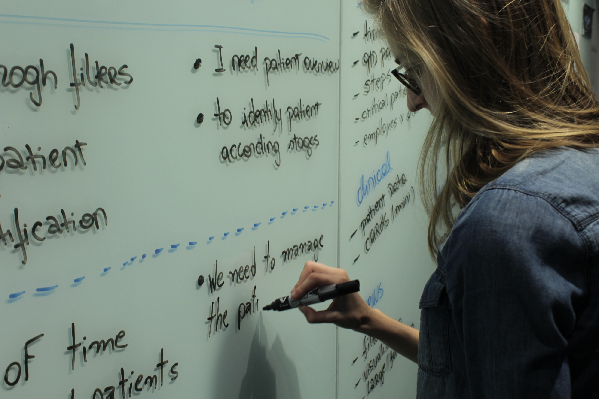
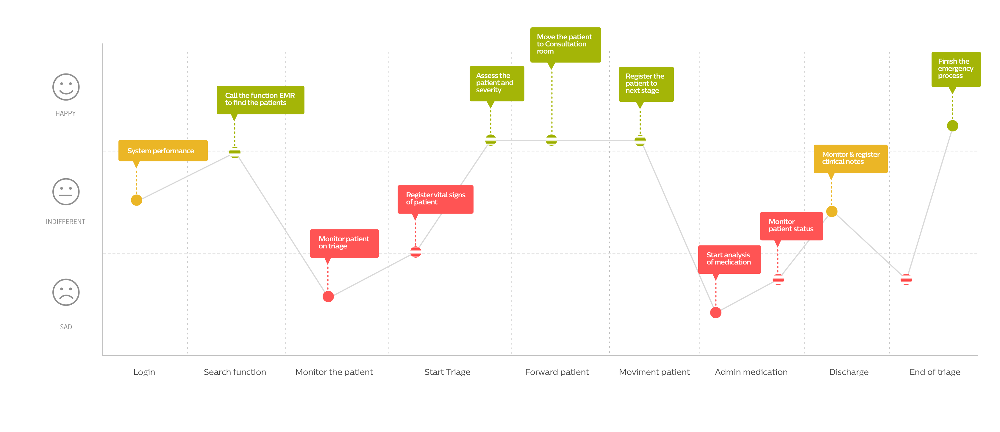
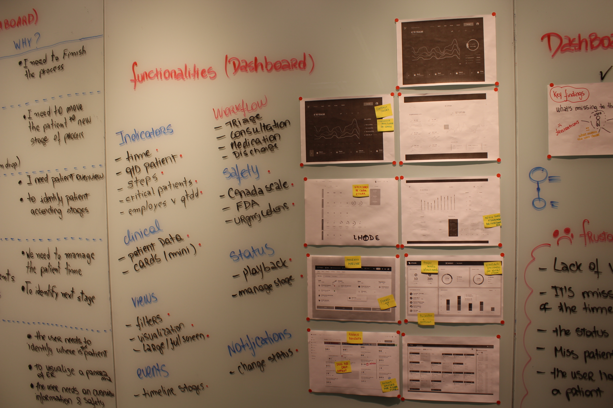
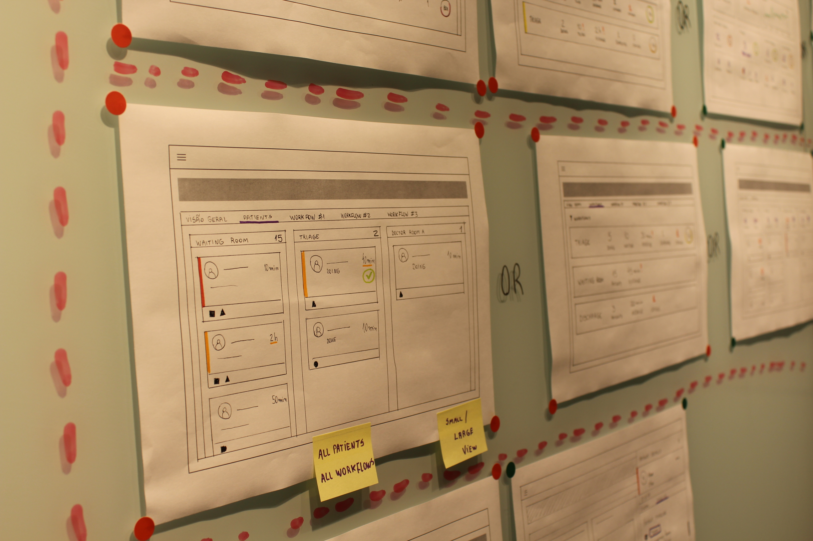
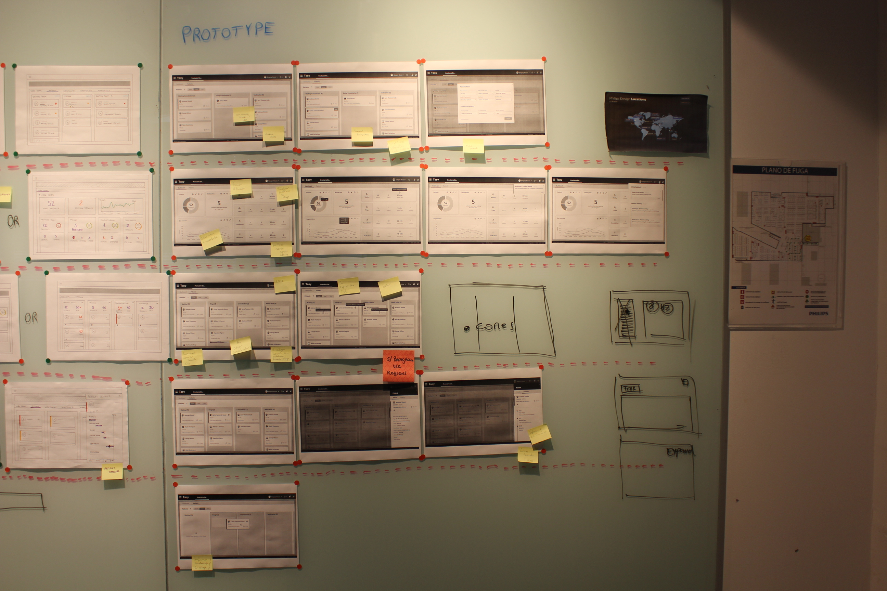

Since the product was migrated from a legacy to a web platform, some hospital users have complained about the lack of visibility into patient status.
To better understand the issues, we dive into field research to observe the routine of nurses, technicians, physicians, and patients in the emergency room of a hospital.

Field research in a emergency room
We analyzed the current interface with the users in the most problematic moments of the emergency room workflow.
Our goals were to understand the challenges Receptionists, Nurses, Technicians, Pharmacists and Physicians faced during the process and the workarounds they used.
Connecting the field research insights
Emergency room management: The nurse needs to control the entire emergency room process.
Legacy influence: Nurse feels safer if she can come back to the version she is used to have.
Patient situation: The users need to know, in a quick way, the patient status and stage. The current scenario, color overloads user with 25 different ones applied for status.
User journey mapped during the field research

After connecting the insights we started to search for possible solutions.
Management: Providing a user interface clear and efficient, reviewing the usage of colors and signalizing the patient status and stages.
Patient overview: Providing a way to have less and more details of the patient
Patient situation: Leveraging the process to move the patient status and providing alerts and notifications in real time.
Solutions braintorming
We generate low and high fidelity prototypes to test the ideas.
Low fidelity prototype

High fidelity prototype
We conduct sessions to review the suggestions with design, businnes and development teams, and we bring together the end-users to validate the final solution.

Validation session